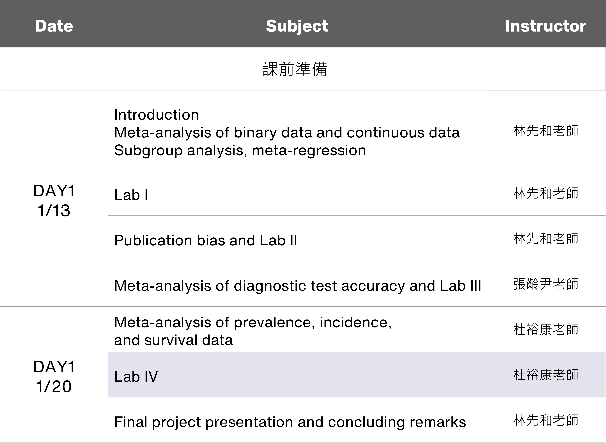

Chapter 4 Prevalence and Survival data
In this chapter, we will use meta and lme4 package to analyze the data, so first we need to use library command to load the add on the package. You can view all the methods for meta analysis of prevalence data of meta package by typing help(meta).
